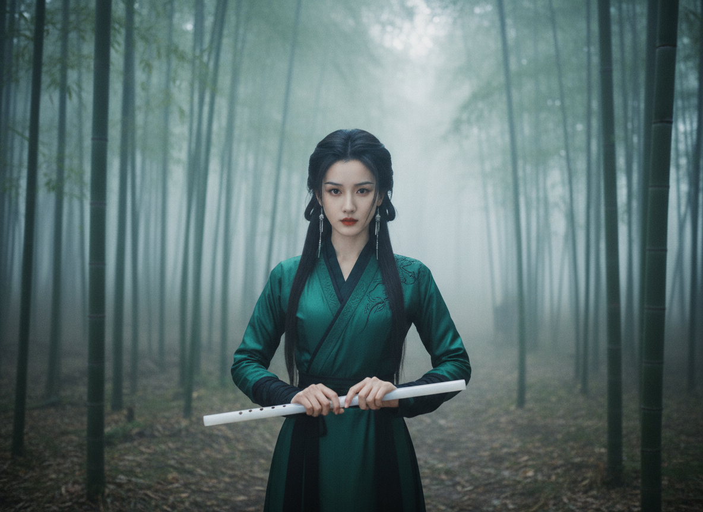

PALACE FAIRY
【月影流光】
设计： 修身银丝织锦衬底，外罩月白蝉翼纱。横持玉笛，身姿曼妙。
暗卫潜行 · V2 影调
FINAL

WINTER FAIRY
【寒梅映雪】
设计： 珍珠白修身缎袍，黑狼毫领，手持墨色桐油纸伞，玉笛横握。
傲雪孤高 · V2 影调
FINAL

CELESTIAL BATTLE
【云丝鹤羽】
设计： 修身缂丝白金袍，白鹤羽片点缀，云海之巅横笛而立，英气勃发。
巅峰决战 · V2 影调
FINAL

FOREST STEALTH
【幽谷青兰】
设计： 深青色修身丝袍，墨色束腰，竹林晨雾中横持玉笛，利落敏捷。
林间暗伏 · V2 影调
NEW